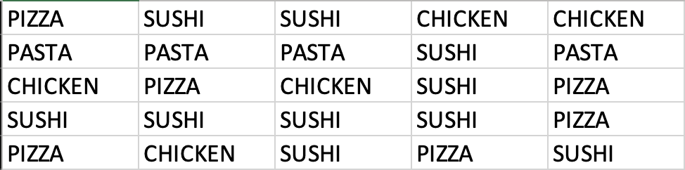
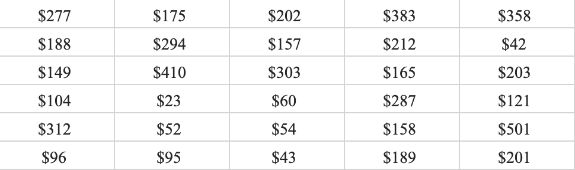
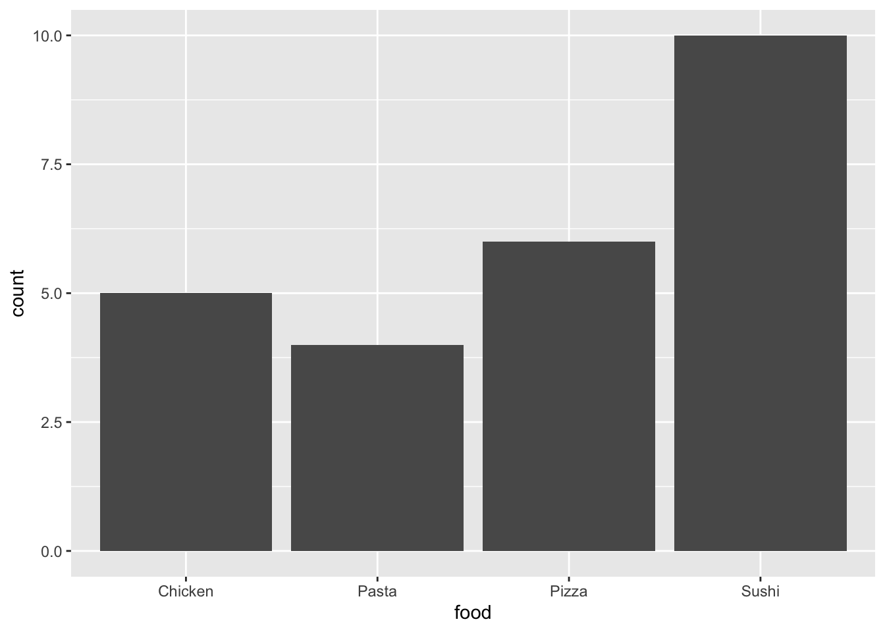
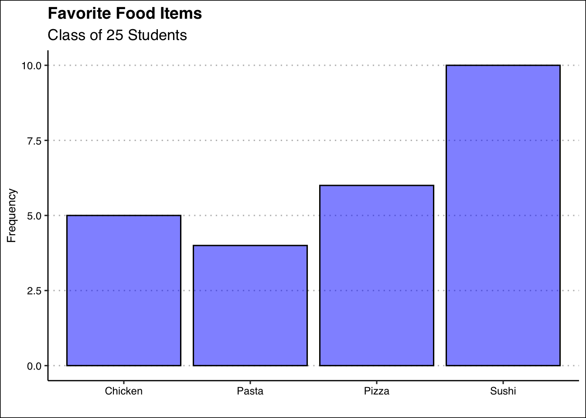
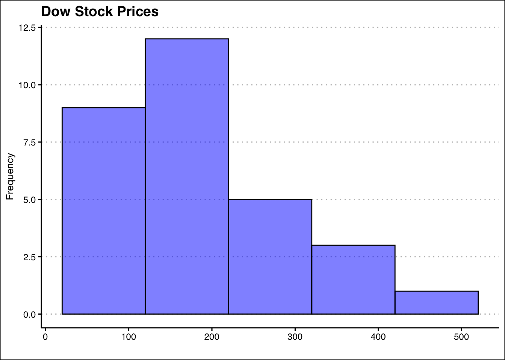
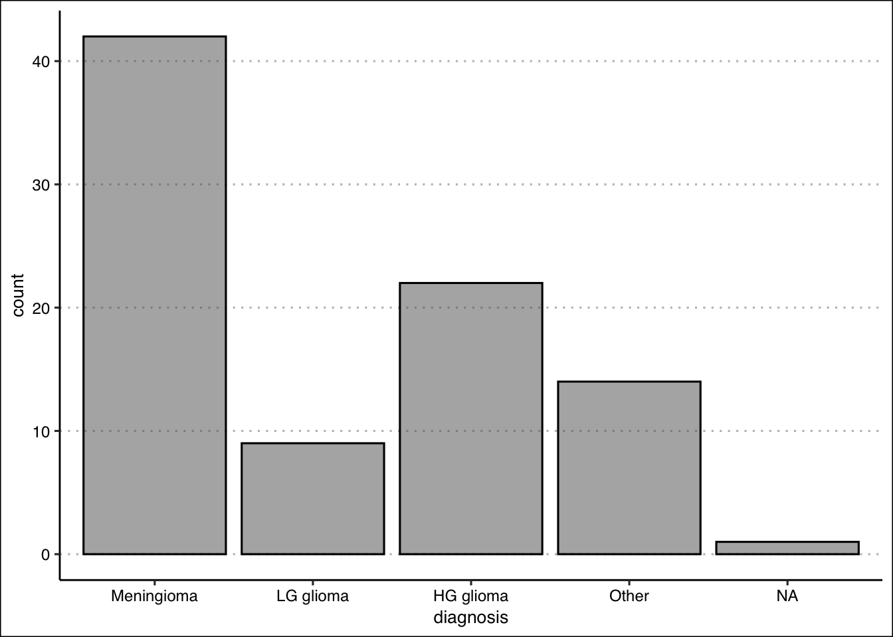
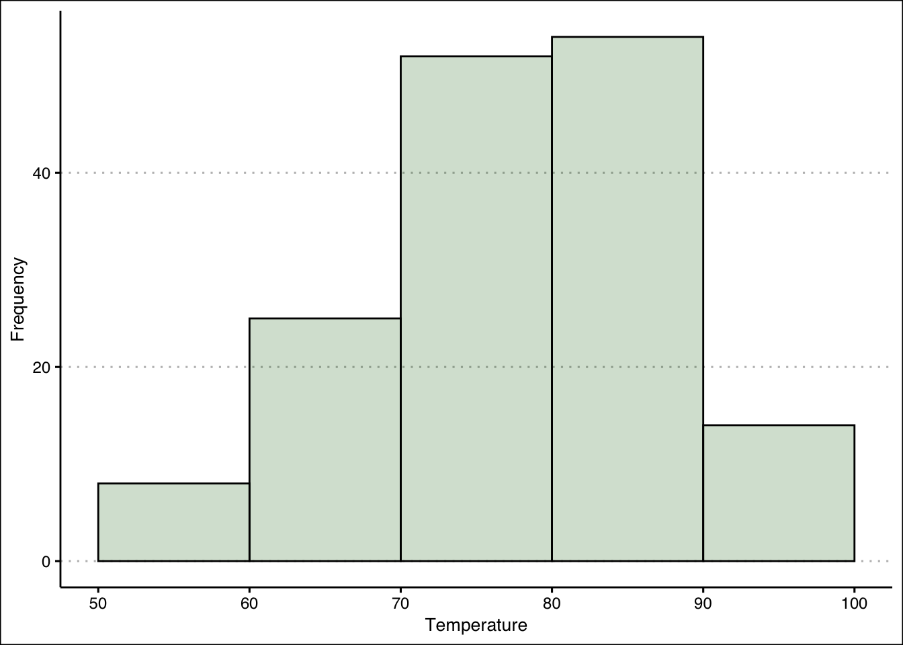
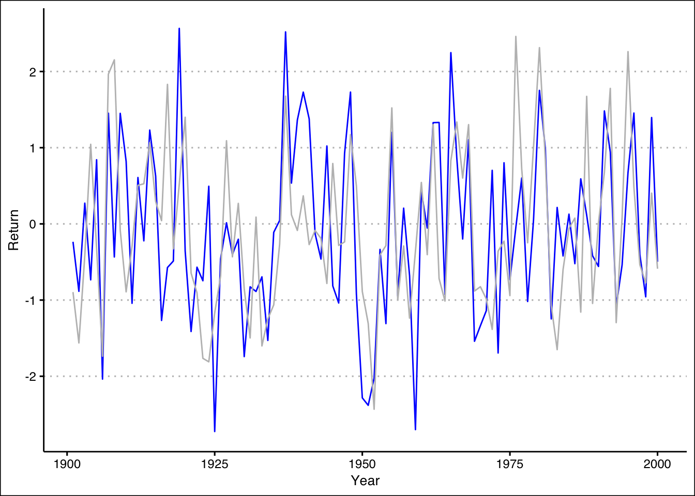
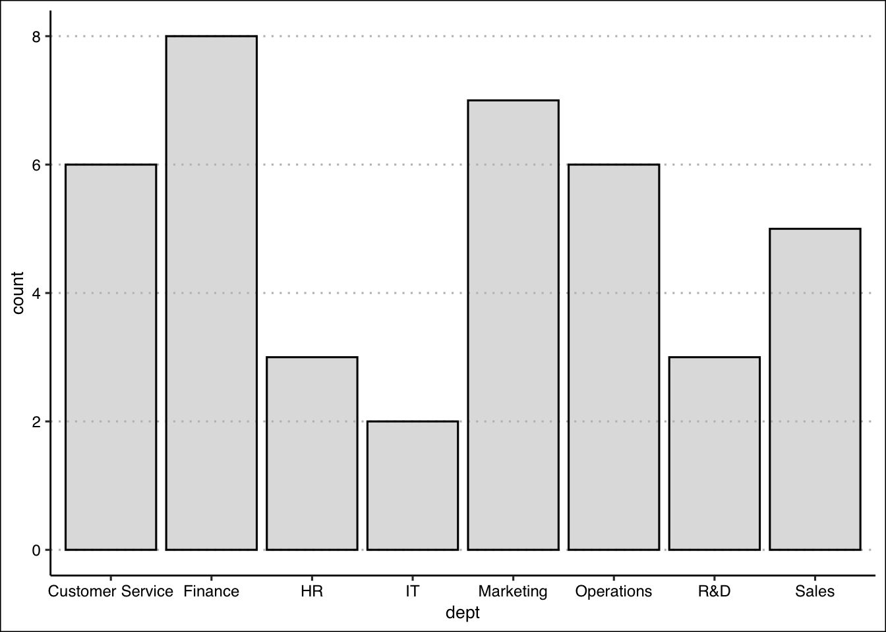
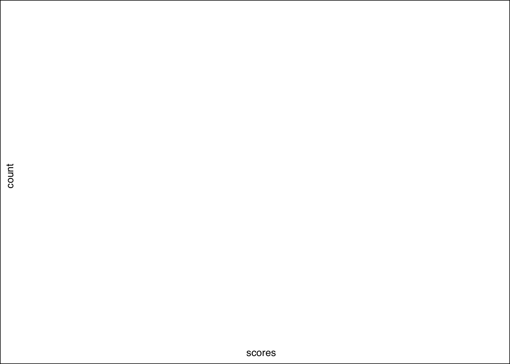

2 Descriptive Stats II
Understanding and visualizing data distributions is a fundamental step in data analysis. It provides critical insights into the underlying characteristics of the data, which directly impact decision-making, model performance, and interpretation. Below, we introduce tabular and visual techniques to describe your data.
2.1 Frequency Distributions (Categorical)
A frequency distribution is perhaps the most valuable tool for summarizing categorical data. It illustrates with a table the number of items within distinct, non-overlapping categories. An alternative known as the relative frequency quantifies the proportion of items in each category relative to the total number of observations. You can calculate it by taking the frequency of a particular class (\(f_{i}\)), and dividing it by the number of observations \(n\). Relative frequency helps contextualize the data by highlighting the significance of each category compared to the whole.
Example: Consider data on students’ answers to the question, what is your favorite food? You can see the data below:
Simply observing raw data can make identifying the most and least popular items challenging. A frequency distribution organizes this information into a clear table, showcasing the popularity of each item. The frequency distribution of the table is displayed below:
| Food | Frequency | Relative |
|---|---|---|
| Chicken | 5 | 0.20 |
| Pasta | 4 | 0.16 |
| Pizza | 6 | 0.24 |
| Sushi | 10 | 0.40 |
Each food item is tallied up, and the result is shown in the frequency column. Alternately, we can show the tally as a proportion of the total (i.e., 25). For example, five students liked chicken; out of the 25 students surveyed, this represents 0.2 or 20%. This calculation is shown for each food item in the relative frequency column.
Below, you can see the bar graph showing the frequency distribution of the food items data. Note that the visualization is constructed by showing each food item as a bar with a height equal to the frequency.

In sum, the bar plot illustrates the frequency distribution of categorical data. It includes the classes in the horizontal axis and frequencies or relative frequencies in the vertical axis and has gaps between each bar.
2.2 Frequency Distributions (Numerical)
When working with numerical data, building a frequency distributions requires additional steps compared to categorical data. The challenge lies in the absence of predefined categories or classes. To construct a frequency distribution for numerical data, it is essential to determine the number, width, and limits of the classes. Here are the steps to create a frequency distribution when data is numerical:
1. Determine the Number of Classes: The number of classes can be estimated using the \(2^k\) rule, where \(k\) is the smallest integer such that \(2^k\) exceeds the total number of observations by the least amount. This ensures the chosen number of classes provides a reasonable level of granularity for summarizing the data.
Ex1: If a data set has 50 observations, we would choose six classes since \(2^6=64\) is greater than \(50\) by the least amount.
Alternatively, you can use Sturges’ rule to estimate the number of classes. This rule suggests using $ k = + 3.322 _{10}(n) $ where \(n\) is the number of observations and \(\lceil \cdot \rceil\) denotes the ceiling function (round up to the nearest integer).
Ex2: If a data set has 50 observations, $ k = + 3.322 = 7 $ so we would choose seven classes.
2. Calculate the Width of Each Class: The width of a class is determined using the formula:
\[ Width = \frac{Max-Min}{Number\ of\ Classes} \]
Ex: If the data set has 50 observations and the minimum value 20 and the maximum is 78, then the width of each class is \(58/6 \approx 9.7\). Hence, we can round up and use a class width of 10. It is important to note to always round up, as this ensures that all data points are included in an class.
3. Establish Class Limits: The class limits define the range of values in each class. These limits should be chosen such that each data point belongs to only one class.
Ex: Consider a data set of 50 observations where each class has a width of 10. Set the class limits of the first class to [20,30). Note that the square bracket indicates that the point should be included in the class, whereas ) indicates that the point should not be included in the class. The six classes would be [20,30), [30,40), [40,50), [50,60), [60,70), and [70,80). By choosing these classes, each point belongs to only one class.
Example: Let’s look at a snapshot of the Dow Jones Industrial 30 stock prices. Below you can see the data:

Let’s follow the steps to build the frequency distribution.
1. Determine the Number of Classes: Here we choose five classes since \(2^5=32\) is greater than \(30\) by the least amount.
2. Calculate the Width of Each Class: The smallest values in the data set is \(23\) and the maximum is \(501\). This gives us a range of \(478\). Now we can just take the range and divide by five to get \(95.6\). To make things simple we can round to \(100\) and use a class width of \(100\).
3. Establish Class Limits: Since we have rounded up we can be flexible with our class limits. The following class limits are suggested [20,120), [120,220), [220,320), [320,420), and [420,520). Note that each class has a width of \(100\), and that each data point belongs to one single class.
2.3 Frequency Distributions in R (Categorical)
The process of constructing frequency distributions in R is straightforward. We will be mainly using the table() function. Let’s start by saving the data in a vector:
food<-c("Pizza","Sushi","Sushi","Chicken",
"Chicken","Pasta","Pasta","Pasta",
"Sushi","Pasta","Chicken","Pizza",
"Chicken","Sushi","Pizza","Sushi",
"Sushi","Sushi","Sushi","Pizza",
"Pizza","Chicken","Sushi","Pizza",
"Sushi")Here we define a vector called food by assigning (<-) the combination (c) of all the food items. To generate the frequency distribution we simply pass the food vector into the table() command.
table(food)food
Chicken Pasta Pizza Sushi
5 4 6 10 As you can see this tallies all the instances for each item. If instead we wanted to obtain the relative frequency we can use the prop.table() function. This function requires the frequency distribution created by the table() function. Hence, we can first create the frequency distribution, save it into an object, and then generate the relative frequency. The code is below:
freq<-table(food)
prop.table(freq)food
Chicken Pasta Pizza Sushi
0.20 0.16 0.24 0.40 As a last modification. If you want percent frequencies, you can multiply the prop.table() function by 100, as shown below:
prop.table(freq)*100food
Chicken Pasta Pizza Sushi
20 16 24 40 2.4 Bar Plot in R
To create the bar plot we will be using the geom_bar() function within the tidyverse package. We start by loading the package:
library(tidyverse)Now R will identify the functions ggplot() and geom_bar() from the ggplot library. To construct the plot we will first call on ggplot() and then specify the type of graph we want by calling on geom_bar(). In the aes() function we will specify which variable (or vector) we want to plot.
ggplot() + geom_bar(aes(food))
We can enhance the visualization by adding a title and changing the theme. The labs() function allows us to change the titles and the ggthemes package allows us to choose from a variety of themes.
ggplot() + geom_bar(aes(food), col="black", alpha=0.5, bg="blue") +
labs(title="Favorite Food Items",
subtitle="Class of 25 Students",
x="", y="Frequency") +
theme_clean()
A few arguments are worth explaining in the code above. The arguments in the geom_bar() function change the background color (bg), the transparency of the color (alpha), and the color of the outline for the bars (col). Title and subtitles are added within the labs() function. To omit labels we can just open and close quotations. Hence, x="" omits the x label.
2.5 Frequency Distribution in R (Numerical)
To construct the frequency distribution in R we will be first generating the classes and then using the table() function as we did in the categorical case. Let’s first get the data into R:
dow<-c(277,174,202,383,358,188,293,156,
212,42,149,410,303,165,203,103,
22,59,287,121,312,52,53,158,500,
96,95,43,188,200)To generate the bins we will use the example and procedure found in 2.2. That is, we will be using five classes, of width 100. Below is the code to do this:
intervals<-cut_width(dow, boundary=20, width=100)
(dowfreq<-table(intervals))intervals
[20,120] (120,220] (220,320] (320,420] (420,520]
9 12 5 3 1 The process involves two steps. First we place each observation in the dow, into the bins by using the cut_width() function. This involves specifying where we want to start our first bin (boundary=20) and the width of each bin (width 100). The function creates the bins and places each observation in the respective bin. The last step is to tally the results with the table() function.
To obtain the cumulative distribution, we can use the cumsum() function. Below we just wrap the frequency distribution (freq) into the cumsum() function.
cumsum(dowfreq) [20,120] (120,220] (220,320] (320,420] (420,520]
9 21 26 29 30 2.6 Histograms in R
To generate the histogram in R we will use once again the tidyverse package. This time we will use the geom_histogram() function. Below is the code to generate the histogram for the dow data:
ggplot() +
geom_histogram(aes(dow), bg="blue", alpha=0.5, col="black",
bins=5,
binwidth = 100,
boundary=20) +
labs(title="Dow Stock Prices",
y="Frequency", x="") +
theme_clean()
Within the geom_histogram() command we can set the classes (or bins) for the histogram. The bins argument specifies the number of bins, bin.width specifies the bin width, and the boundary specifies where should the histogram starts. This histogram allows us to observe quickly that most stocks in the dow are priced between 20 and 220 dollars.
2.7 Exercises
The following exercises will help you practice summarizing data with tables and simple graphs. In particular, the exercises work on:
Developing frequency distributions for both categorical and numerical data.
Constructing bar charts, histograms, and line charts.
Creating contingency tables.
Answers are provided below. Try not to peek until you have a formulated your own answer and double checked your work for any mistakes.
Exercise 1
Install the ISLR2 package in R. You will need the BrainCancer data set to answer this question.
- Construct a frequency and relative frequency table of the Diagnosis variable. What was the most common diagnosis? What percentage of the sample had this diagnosis?
Answer
The most common diagnosis is Meningioma, a slow-growing tumor that forms from the membranous layers surrounding the brain and spinal cord. The diagnosis represents about \(48.28\)% of the sample.
Start by loading the ISLR2 package. To construct the frequency distribution table, use the table() function.
library(ISLR2)
table(BrainCancer$diagnosis)
Meningioma LG glioma HG glioma Other
42 9 22 14 The relative frequency distribution can be easily retrieved by saving the frequency table in an object and then using the prop.table() function.
freq<-table(BrainCancer$diagnosis)
prop.table(freq)
Meningioma LG glioma HG glioma Other
0.4827586 0.1034483 0.2528736 0.1609195 - Construct a bar chart. Summarize the findings.
Answer
The majority of diagnosis are Meningioma. Low grade glioma is the least common of diagnosis. High grade glioma and other diagnosis have about the same frequency.
To construct the bar chart use the geom_bar() function from tidyverse.
library(tidyverse)
library(ggthemes)
ggplot(data=BrainCancer) +
geom_bar(aes(diagnosis), alpha=0.5, col="black") +
theme_clean()
- Construct a contingency table that shows the Diagnosis along with the Status. Which diagnosis had the highest number of non-survivals (0)? What was the survival rate of this diagnosis?
Answer
\(33\) people did not survive Meningioma. The survival rate of Meningioma is only \(21.43\)%.
Use the table() function one more time to create the contingency table for the two variables.
(freq2<-table(BrainCancer$status,BrainCancer$diagnosis))
Meningioma LG glioma HG glioma Other
0 33 5 5 9
1 9 4 17 5To get the survival rates, we can use the prop.table() function once again.
prop.table(freq2,margin = 2)
Meningioma LG glioma HG glioma Other
0 0.7857143 0.5555556 0.2272727 0.6428571
1 0.2142857 0.4444444 0.7727273 0.3571429Exercise 2
You will need the airquality data set (in base R) to answer this question.
- Construct a frequency distribution for Temp. Use five classes with widths of \(50<x\le60\); \(60<x\le70\); etc. Which interval had the highest frequency? How many times was the temperature between \(50\) and \(60\) degrees?
Answer
The highest frequency is in the \(80 < x ≤ 90\) bin. \(8\) temperatures were between \(50 < x ≤ 60\) degrees.
We can create the intervals using the cut_width() function:
intervals <- cut_width(airquality$Temp, width = 10,
boundary=50)The frequency distribution can be obtained by using the table() function on the interval.cut object created above.
table(intervals)intervals
[50,60] (60,70] (70,80] (80,90] (90,100]
8 25 52 54 14 - Construct a relative frequency, cumulative frequency and the relative cumulative frequency distributions. What proportion of the time was Temp between \(50\) and \(60\) degrees? How many times was the Temp \(70\) degrees or less? What proportion of the time was Temp more than \(70\) degrees?
Answer
The temperature was \(5.22\)% of the time between \(50\) and \(60\); The temperature was \(70\) or less \(33\) times; The temperature was above \(70\), \(78.43\)% of the time.
To get the relative frequency table, start by saving the proportion table into an object.Then you can use the prop.table() function.
freq<-table(intervals)
prop.table(freq)intervals
[50,60] (60,70] (70,80] (80,90] (90,100]
0.05228758 0.16339869 0.33986928 0.35294118 0.09150327 For the cumulative distribution you can use the cumsum() function on the frequency distribution.
cumulfreq<-cumsum(freq)
cumulfreq [50,60] (60,70] (70,80] (80,90] (90,100]
8 33 85 139 153 Lastly, for the relative cumulative distribution table, you can use the cumsum() function on the relative frequency table.
cumsum(prop.table(freq)) [50,60] (60,70] (70,80] (80,90] (90,100]
0.05228758 0.21568627 0.55555556 0.90849673 1.00000000 - Construct the histogram. Is the distribution symmetric? If not, is it skewed to the left or right?
Answer
The distribution is not perfectly symmetric. It is skewed slightly to the left (see histogram.)
Use the geom_histogram() function to create the histogram.
ggplot() +
geom_histogram(aes(airquality$Temp), col="black",
bg="darkgreen",alpha=0.2,
bins=5,
binwidth = 10,
boundary=0) + theme_clean() +
labs(x="Temperature", y="Frequency")
Exercise 3
You will need the Portfolio data set from the ISLR2 package to answer this question.
- Construct a line chart that shows the returns over time for each portfolio (X and Y) by using two lines each with a unique color. Assume the data is for the period \(1901\) to \(2000\). Include also a legend that matches colors to portfolios.
Answer
From \(1901\) through \(2000\), both portfolios have behaved very similarly. Returns are between \(-3\)% and \(3\)%, there is no trend, and positive (negative) returns for X seem to match with positive (negative) returns of Y.
You can use the geom_line() function to create a line for each portfolio.
ggplot() +
geom_line(aes(y=Portfolio$Y,x=seq(1901,2000)), col="blue") +
geom_line(aes(y=Portfolio$X,x=seq(1901,2000)), col="grey") +
theme_clean() +
labs(x="Year", y="Return")
Exercise 4
A company surveyed 40 employees about their primary department. The responses are:
dept <- c("Marketing", "Sales", "Finance", "Operations", "Marketing", "HR", "IT", "Finance", "Customer Service", "Marketing", "Sales", "Finance", "Operations", "R&D", "Marketing", "Finance", "Customer Service", "Operations", "Marketing", "Finance", "HR", "Sales", "Customer Service", "Operations", "Marketing", "Finance", "IT", "R&D", "Customer Service", "Operations", "Sales", "Finance", "Customer Service", "Marketing", "Finance", "HR", "Customer Service", "Operations", "R&D", "Sales")- Use R to create a frequency distribution table for these departments.
Answer
table(dept)dept
Customer Service Finance HR IT
6 8 3 2
Marketing Operations R&D Sales
7 6 3 5 - Compute the relative frequencies (as percentages).
Answer
prop.table(table(dept)) * 100dept
Customer Service Finance HR IT
15.0 20.0 7.5 5.0
Marketing Operations R&D Sales
17.5 15.0 7.5 12.5 - Create a bar plot of the frequencies. Which department has the highest frequency? What is its relative frequency (percentage)?
Answer
ggplot() +
geom_bar(aes(x=dept), bg="grey",
col="black", alpha=0.5) +
theme_clean()
Exercise 5
A class of 50 students took a business statistics exam (out of 100 points). Their scores were:
scores <- c(75.6, 66.9, 83.4, 67.2, 95.3, 90.5, 54.4, 76.8, 88.5, 63.3, 95.1, 69.9, 80.4, 91.9, 66.7, 58.0, 81.9, 78.7, 51.9, 55.4, 94.5, 71.8, 65.8, 54.6, 92.6, 68.7, 76.4, 57.1, 72.4, 90.1, 54.4, 66.6, 84.2, 74.3, 95.6, 51.6, 79.9, 65.8, 89.5, 70.4, 88.4, 83.3, 87.7, 62.3, 59.1, 60.3, 53.5, 50.1, 51.1, 52.6)- Construct a histogram using 7 classes with width 10, starting at 50 (bins: [50,60), [60,70), etc.). Use
geom_histogram()with appropriate parameters. In which bin is the highest frequency? How many students scored in that range?
Answer
ggplot() +
geom_histogram(aes(x=scores),
breaks = seq(50, 100, by = 10),
closed = "left",
col="black", bg="grey") +
theme_clean()